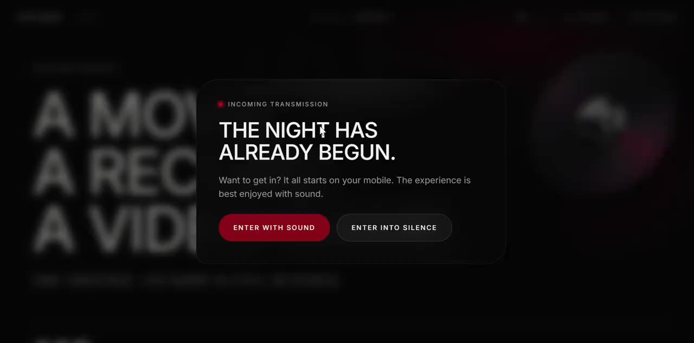

Creative IP,
Qantica connects creators with studios and platforms through QIP, a patented methodology that takes original stories from first draft to market-ready IP.
From first draft to market-ready IP
QIP is a proprietary methodology refined through repeated evaluation by professional screenwriters. It provides the foundation for specialized LLM development on cloud infrastructure provided by AWS. Every project follows a measured process: analyze, improve, certify and sell.
Analyze
Non-generative AI reads the script against 18 narrative criteria and returns a prioritized list of Improvement Points — the IPI.
Output: IPI score + issue listImprove
The Tutor and specialist advisors guide the author through each point. The author writes every word; the system asks, never writes.
Output: iterations, resolved pointsCertify
Initial and final IPI are sealed on blockchain. The delta between them is the quality certificate a buyer can verify.
Output: verifiable improvement recordSell
Certified works go to auction. Studios and platforms bid on the rights with the certificate, the showcase and the authorship record in hand.
Output: a potential rights deal, facilitated by Qantica between the author and the buyerA tutor that has read the whole script
Ask anything about the work. The Tutor holds the full context — every scene, character, previous conversation and pending point — and helps the author explore ideas and make creative decisions.
Ask the Tutor
Pick a question or type your own. The Tutor answers with the full context of the sample project — and, as always, sends you back to the scene instead of writing it for you.
Demo with scripted replies from the sample project Mantis (52 scenes, iteration 1). The real Tutor runs inside the platform with your own script.
Specialists on call
Specialized AI assistants bring medical, military, psychological and criminological perspectives to your story, with the full context of your project.
Improvement points, prioritized
Every issue is typed, scored and tracked to resolution. The writer always knows what to work on next — and why.
Incoherent psychological transition in Javi's turn toward submission
The jump from panic and attempted escape to voluntarily becoming a servant lacks a solid internal justification, weakening the credibility of his arc at the end of act two.
How could the protagonist's earlier behaviour foreshadow this surrender? Which latent elements in his inner conflict would justify the loss of resistance?
From script to storyboard, bible and game design
Every scene gets a visual. The Bible, Moodboard, Storyboard and Game Design Document (GDD) live next to the script, so a project leaves QIP as a package a studio can evaluate — not a PDF attached to an email.
QIP evaluates a script’s potential for adaptation into a game. The GDD outlines possible structures, mechanics and playable moments for a game studio to assess before committing a development team.
Measured, not felt
Track how identified improvement points are resolved across iterations. The record supports project review alongside the script and supporting materials. Illustrative project shown.
The author writes. Always.
Scenes are written in professional screenplay format with version history. QIP never generates a line of the work — which is exactly why the certificate means something.
Your work is never used to train AI models
Only anonymous metrics leave the project. Dialogues, plots, characters and descriptions never cross the line — and every milestone of the process is sealed on a public chain nobody can edit.
What leaves the project — and what never does
The analysis engine is calibrated with numbers, not with stories.
We never use
- The full text of your script, scenes or dialogues
- The names, plots or arcs of your characters
- Any identifiable creative content from your work
- Fragments, summaries or derivatives of your narrative material
We do use (anonymous data)
- Initial and final IPI of the project (aggregated metric)
- Number of iterations and average resolutions per iteration
- Percentage of improvement points identified per thematic block
- Performance of the model used in each system process
Built into the product, not the terms of service
Every author can open Work Protection inside their project and see exactly how their data flows and which seals already exist.
The protection chain of a work
Five moments, five digital seals, permanently recorded. Nobody can alter a link without breaking the chain.
Original Work Registration
A unique fingerprint of the work exactly as written, before the system touches it.
On first uploadInitial Diagnostic Logging
The first IPI and its issue list become the protected starting point.
After the first analysisGuided Q&A Registry
Records the guided questions and the author’s responses throughout the development process.
During iterationsScript Change Tracking
Tracks the author’s script revisions and scene changes across iterations.
As scenes are writtenFinal Enhanced Work Certification
The finished work is sealed with its improvement metric — a complete, verifiable process record.
On completionCertified works go to auction
Improve, certify, sell. Once a work carries its final certificate, studios and platforms bid on the rights with the certificate, the showcase and the authorship record in hand — and Qantica participates in every successful sale.
A clearer basis for buyer decisions
Every lot in the auction has been through the full QIP loop. What a buyer sees is not a logline: it's a measured improvement, a sealed chain of authorship and a showcase they can open.
A work is listed when its final certificate exists: initial and final IPI sealed, authorship chain complete.
Film, series, game, music — the formats the work already carries. Bidders read the certificate, open the showcase, then bid.
Enterprise licenses plus participation in successful IP sales. The platform's incentive is the sale, not the subscription.

Mantis
What a validated IP looks like
Projects that go through QIP ship with their own interactive showcase. The pitch is the experience — and it's what studios, platforms and partners get to open.
Mantis
One universe across three formats. A signal connects cinema, music and play inside the world of Xina Mora — and the audience enters from their phone.
Fumigarios
A bankrupt family pest-control business in Buenos Aires starts taking far deadlier jobs. Comedy first, drama always.
One standard.
Every format.
Film, series, games and music through a single intake standard. Every submission arrives analyzed, iterated and certified, with a verifiable record of who wrote what, helping acquisition teams compare projects and prioritize further review.
- Verifiable IPI delta on every certified work
- Human-authorship proof, sealed on chain (BC1–BC5)
- Bible, storyboard and GDD delivered with the script
- Buyer access to the auction of certified works
- Enterprise licensing, infrastructure validated with AWS
QANTICA · QIP CERTIFICATE Work Mantis Formats Film · Album · Game Methodology QIP · patented Authorship Human · sealed BC1–BC4 IPI initial 23 → final 0 · 4 iterations Training use none · creative content never leaves the project Status Certified · BC5
{
"work": "Mantis",
"methodology": "QIP · patented",
"author": "sealed · human",
"seals": ["BC1", "BC2", "BC3", "BC4", "BC5"],
"ipi": { "initial": 23, "final": 0, "iterations": 4 },
"formats": ["film", "album", "game"],
"training_use": false,
"verified": true
}
seal event fingerprint status BC1 Original Work Registration 9f3a…c21e confirmed BC2 Initial Diagnostic Logging 41d7…8b0f confirmed BC3 Guided Q&A Registry e02c…77aa ×18 confirmed BC4 Script Change Tracking b5e1…03d4 confirmed BC5 Final Enhanced Work Certification 6c9d…f1e2 confirmed chain integrity valid · every link references the previous one
Choose how to work with Qantica
Start a project
A progressive path from first draft to a certified, showcased IP.
- QIP analysis on 18 narrative criteria
- Tutor and specialists with full project context
- Blockchain registration from the first upload
- Your work is never used to train models
Get enterprise access
License QIP as your intake standard, with hands-on onboarding.
- Certified pipeline of validated IP
- Verifiable authorship and improvement records
- Dedicated onboarding and integration support
- Infrastructure validated with AWS
Questions investors ask us
Is Qantica a generative AI company?
QIP analyzes your script and guides revision without writing or rewriting it. Every line remains the author's. After the script has been curated, AI-generated images support storyboards and other visual materials.
What exactly is patented?
QIP, the methodology that takes a work through analysis, measured iteration and certification. It's the standard the platform runs on and the one we license to studios and platforms.
How does Qantica approach games?
QIP evaluates the potential for adapting a script into a game and provides a GDD alongside the script, bible and storyboard. Game rights can be offered at auction, as with film or series rights. The acquiring studio develops the game.
Who owns the work and the data?
The author, always. Creative content never leaves the project and is never used to train, fine-tune or improve any model. Only anonymous, aggregated metrics calibrate the analysis engine.
What goes on the blockchain?
Digital fingerprints, not content: the original work (BC1), the initial diagnosis (BC2), guided questions and author responses (BC3), script revisions and scene changes (BC4) and the final certificate with its improvement metric (BC5). Anyone can verify the chain; nobody can read the script from it.
How does Qantica make money?
Two paths: enterprise licensing of QIP to studios and platforms as an intake standard, and participation in successful IP sales when certified works are sold at auction. Qantica earns when the author earns.
What does the seed round fund?
Scaling enterprise licensing with studios and platforms on top of a platform that is already live, with active projects, two published showcases, blockchain protection in production and infrastructure validated with AWS. View the deck or request the data room for the full plan.
$3M to become the standard
Global entertainment and media market projected to reach $3.4T by 2028.
Platform live with active projects, two showcases shipped, patented methodology, blockchain protection in production and infrastructure validated with AWS. The technology roadmap also includes specialized LLM development. We're raising to scale enterprise licensing with studios and platforms.